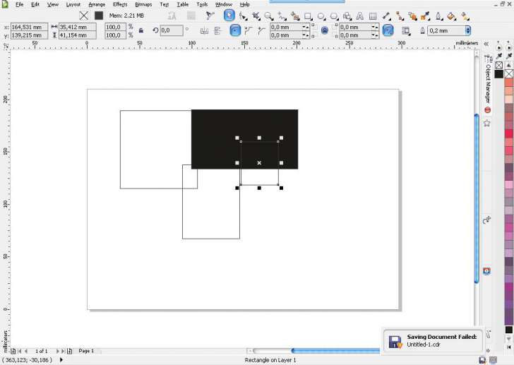

Проблема с сохранением файлов...
anjerka / 19.09.2010, 22:31/00:41
Форум:
Система: XP professional SP3
Работал в CorelDraw X5 более полугода не зная проблем, и вдруг на тебе, - постоянно при сохранении выдает ошибку. См. картинку

Приходится нажимать save по нескольку раз (2-4) пока наконец не сохранится файл. Вес и контент файла не имеют значения(специально пробовал сохранять разные)
Переустановка с обновлением до первого сервис пака, проблему не исправила. :(
Все разбежались прям ответить. Опять мне отвечать? :(
ну да)
Тем более проблема никуда - не делась, до сих пор актуальна :(
Если Corel лицензионный, то проблема скорее всего системы, ну а если нет, то криво заломанный. Или возможна проблема вообще с железом (то есть глючит винт - проблема с записью/чтением).
Как бороться - для начала попробовать переустановить систему (или перейти на Win7, например). Ну, а дальше тестировать железо.
Скорей всего это железо забарахлило, тк ещё и такая особенность вылезла: копирование/вырезка объекта происходит, с 2 или 3 нажатия клавиши ctrl-c/x
Винт или оператива вот в чем вопрос, и как проверить
По железу я не большой спец. Но вообще существует масса разных программных тестов для винтов и оперативки. Яндекс или Гугл в помощь.
P.S. помнится была такая прога EVEREST в ней целый набор тестов для железа.